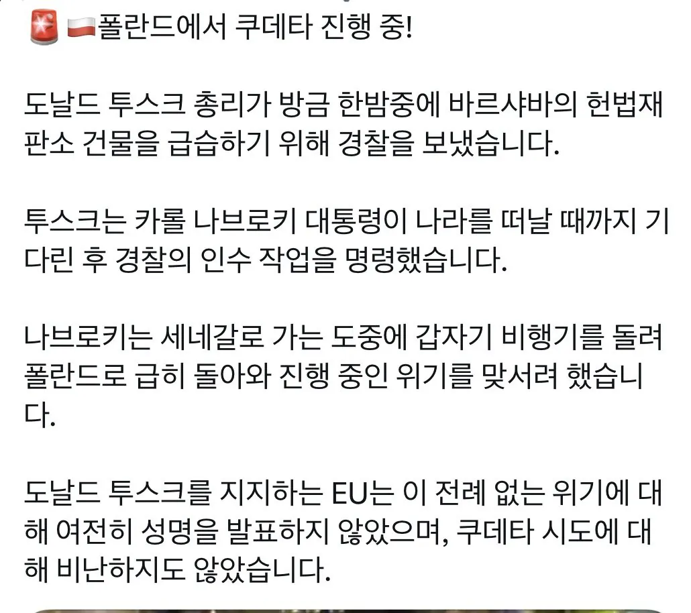

피를 토하는 심정으로
설마 이런식으로 k2 실전 투입하는건가
대통령 해외에 있을 때 총리의 기습 쿠데타
사유는 헌법재판소 재판관 임명 관련된 내용인듯
계속 쿠데타라고 개드립에 올라오는데 쿠데타 아니야~ 폴란드 현지는 조용하니까 걱정마라.
k-컬쳐가 선도하는구나
캬 김구 선생님..
지금 폴란드 대통령 극우잖아
쌤통이네
비상 개헤엄을

트럼프는 지금 웃고 있다
쿠데타가 아니라 옛날 국회공성전 느낌인건가
민주쿠데타
EU가 지지해?? 친 이민 친 러시아 아니냐????
그렇게 되면 쿠데타야...
얘들도 월요일 증시 볼만하겠네
또 도날드야?
K9 설명서 대신에 쿠데타 설명서 보냈나보네
폴그떠
K-쿠데타 키야 주모 샷따 엎어
으윽 머리가
이런거까지 수출하고 싶진 않았는데
쿠데타충 총출동!
쿠데타 옹호하는 버러지는 대체 뭐야
왜냐면 쿠데타라고 보기 어려우니까...
1. 폴란드 헌법재판관 선출은 의회의 고유 권한임.
2. 재판관이 직무를 시작하려면 대통령 앞에서 선서를 해야 하는데, 현 대통령이 의회에서 선출한 재판관 6명 중 4명의 선서를 거부하고 있음.
3. 근데 2015년 폴란드 헌재랑 2021년 유럽인권재판소 판결에 따르면, 적법하게 뽑힌 재판관 선서를 대통령 맘대로 거부하면 안 됨.
4. 현 대통령은 선출 절차에 법적 문제가 있다는 이유로 몇 달째 선서를 안 받고 있고, 기존 헌법재판소장도 해당 재판관들의 업무를 막고 있었음.
5. 대통령이 해외 출장 간 사이, 새로 선출된 재판관 측에서 기존 헌법재판소장과 부소장의 직무를 한 달간 중단시키고 다른 재판관이 소장 권한을 대행한다고 발표함. 이 과정에서 시위대가 몰려 경찰까지 출동한 거임.
6. 경찰은 시위 진압과 관계자 보호 차원에서 출동했다고 밝혔고, 건물 내부에는 진입하지 않았다고 함. 물론 기존 소장 직무 중단 조치가 적법했는지는 별개로 논란이 있음.
헌법재판소 한정 내부 쿠데타라는 말이군
이게 쿠데타가 맞...나?
대통령이 반헌법적으로 헌재를 무력화하고 있는걸 의회가 정상화 시키는 시도가 쿠데타?
오히려 삼권분립 위배지
행정부랑 사법부는 적법하게 입법부 견제한거임
대통령이 반헌법적이라고 말하기엔 중립입장에서 보면 몇 달간 진행 못한거 보면 위법도 아님
진짜 반헌법적 위법이였으면 애초에 프랑스처럼 시민들이 존나 시위해서 탄핵갔을꺼니깐
폴란드 헌재의 판결에 따르면 대통령은 의회가 임명한 재판관의 임명을 거부할 권한이 없고, 지체없이 선서를 받아야함. 선서라는 행위는 대통령이 거부권처럼 쓸 수 있는 행위가 아님.
따라서 사법부의 의회 견제라고 볼 수 없음
애초에 대통령의 권한이 아닌걸 권한처럼 쓰는게 남용이고 삼권분립 위반임
제대로된 정치라면 얻는게 있으면 주는게 있는 식으로 딜을 해야하는데 그냥 공석일 때 날치기 처리하니깐 쿠데타 소리 듣는거지.
입법부가 국민투표로 선출됐다고 해도 행정부도 국민투표로 선출된거고 사법부 고위직도 이전 입법부랑 행정부가 대리임명한 결과인건데, 저건 반대파 국민들 의견은 개무시하는 처사임
그리고 선서라는걸 거부권처럼 못쓴다고 하지만 그건 법전에서 해석하기 나름이라 아무런 의미가 없음
그래서 말하는게 반헌법적 위법이면 시위하고 탄핵표결 달린다고. 근데 그걸 못한다는거부터가 명분이 부족한거임. 행정부는 자기들 권한을 행사하는거뿐임. 권한인지 아닌지 해석하는건 결국 법관들인건데 아무말 없잖음. 사법부도 사실상 암묵적으로 행정부 견제에 동의한거지.
진짜 국가적으로 문제되는 상황이면 좌우 관련없이 저새끼 사형해야된다고 하지 안그러면 그게 독재인건데 폴란드 상황이 독재냐? 물으면 해외출장 갈 때 쿠데타 하는거보면 그건 절대 아닐듯. 난 폴란드의 현재 상황이 잘 작동하는 삼권분립이라고 봄. 서로가 서로를 견제하는 고위층들이란게 얼마나 멋진거냐. 이게 진정한 민주주의지.
의회도 국민이 뽑은건데 왜 대통령은 의회를 무시함? 애초에 법전에서 해석하기 나름 이딴 것 때문에 민주주의가 무너지는거지.
제대로 된 정치인이면 줄건줘가 되야한다고? 역대 폴란드 대통령 중에 거부권 행사 제일 많이한게 10년 재임동안 35번인데, 현 대통령은 14개월에 48건이야. 애초에 대통령도 줄건줘를 안하는데 의회가 왜 그래야하지? 대통령은 정당한 권리행사고 의회는 쿠데타야?
아 근디 폴란드의 상황이 그래도 삼권분립이 지켜지고 있다는건 동의함. 조금 삐그덕대는건 있지만 ㅋㅋ 그래서 자꾸 쿠데타라고 몰아가는 글을 보니까 좀 짜증났던거
그래서 말하는게 삼권합의가 중요하다는거. 국민들은 고위층들이 서로 견제하라고 뽑아둔거라고 생각함. 걍 고위층들끼리 줘터지게 싸울 때 시민들은 공원에 피크닉가고 가족들이랑 즐거운 시간 보내면 됨 ㅋㅋ
바르샤바의 봄
우린 이미 몇 번 해봤어요
쿠데타 치곤 뭔가 규모가 소박하네
수출잼
지금 무언가를 가지고 폴란드 가는 중인데 별일 없어라..
폴란드 지금 성장 엄청 좋던데
마치 우리 한강의기적 보는 느낌이었는데
계엄가나요?